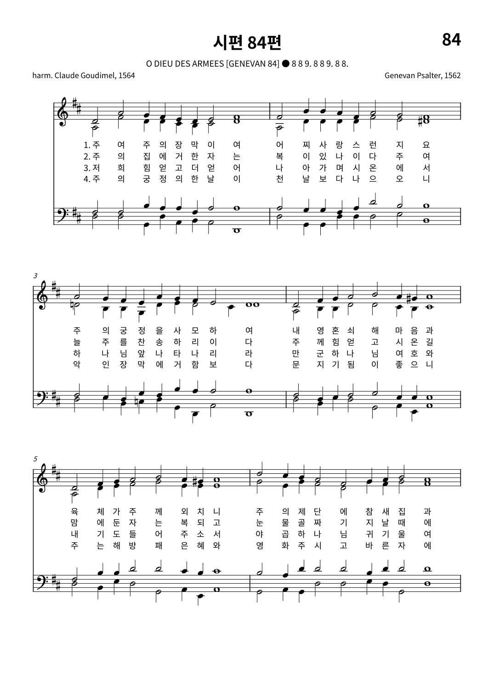

Psalm 84
O DIEU DES ARMEES [GENEVAN 84] · 8 8 9. 8 8 9. 8 8.
English title: O LORD of Hosts, O God of Grace
Tune: Genevan Psalter, 1562 · Harmony: Claude Goudimel, 1564 · Lyrics: Korean adaptation of Psalm 84 from the Korean Revised Version (AI draft adaptation · not yet theologically reviewed) · 4 stanzas
Score PDF MusicXML (for printing) MusicXML (for accompaniment, with prelude and repeats) Read Psalm 84 (Korean Revised Version)
Score
← Psalm 83 ListAccompaniment (in preparation)Psalm 85 →
Lyrics (Korean)
Stanza 1 (Ps. 1-3)
주여 주의 장막이여
어찌 사랑스런지요
주의 궁정을 사모하여
내 영혼 쇠해 마음과
육체가 주께 외치니
주의 제단에 참새 집과
제비의 새끼 둘 곳이
있나이다 내 왕이여
주여 주의 장막이여
어찌 사랑스런지요
주의 궁정을 사모하여
내 영혼 쇠해 마음과
육체가 주께 외치니
주의 제단에 참새 집과
제비의 새끼 둘 곳이
있나이다 내 왕이여
Stanza 2 (Ps. 4-6)
주의 집에 거한 자는
복이 있나이다 주여
늘 주를 찬송하리이다
주께 힘 얻고 시온 길
맘에 둔 자는 복되고
눈물 골짜기 지날 때에
많은 샘으로 채우며
이른 비 은택 주도다
주의 집에 거한 자는
복이 있나이다 주여
늘 주를 찬송하리이다
주께 힘 얻고 시온 길
맘에 둔 자는 복되고
눈물 골짜기 지날 때에
많은 샘으로 채우며
이른 비 은택 주도다
Stanza 3 (Ps. 7-9)
저희 힘 얻고 더 얻어
나아가며 시온에서
하나님 앞 나타나리라
만군 하나님 여호와
내 기도 들어 주소서
야곱 하나님 귀 기울여
우리의 방패 하나님
기름 부은 자 보소서
저희 힘 얻고 더 얻어
나아가며 시온에서
하나님 앞 나타나리라
만군 하나님 여호와
내 기도 들어 주소서
야곱 하나님 귀 기울여
우리의 방패 하나님
기름 부은 자 보소서
Stanza 4 (Ps. 10-12)
주의 궁정의 한 날이
천 날보다 나으오니
악인 장막에 거함보다
문지기 됨이 좋으니
주는 해 방패 은혜와
영화 주시고 바른 자에
좋은 것 아낌 없도다
주 믿는 자 복 있도다
주의 궁정의 한 날이
천 날보다 나으오니
악인 장막에 거함보다
문지기 됨이 좋으니
주는 해 방패 은혜와
영화 주시고 바른 자에
좋은 것 아낌 없도다
주 믿는 자 복 있도다